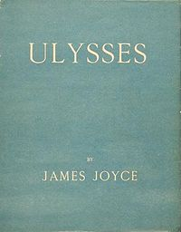

Ulysses

Ulysses is a novel by the Irish writer James Joyce. It was first serialised in parts in the American journal The Little Review from March 1918 to December 1920, and then published in its entirety by Sylvia Beach in February 1922, in Paris. Considered one of the most important works of Modernist literature, it has been called "a demonstration and summation of the entire movement". "Before Joyce, no writer of fiction had so foregrounded the process of thinking."
Ulysses chronicles the passage of Leopold Bloom through Dublin during an ordinary day, 16 June 1904 (the day of Joyce's first date with his future wife, Nora Barnacle). Ulysses is the Latinised name of Odysseus, the hero of Homer's poem Odyssey, and the novel establishes a series of parallels between its characters and events and those of the poem (e.g., the correspondence of Leopold Bloom to Odysseus, Molly Bloom to Penelope, and Stephen Dedalus to Telemachus).
Ulysses is approximately 265,000 words in length, uses a lexicon of 30,030 words (including proper names, plurals and various verb tenses), and is divided into eighteen episodes.
Since publication, the book has attracted controversy and scrutiny, ranging from early obscenity trials to protracted textual "Joyce Wars." Ulysses' stream-of-consciousness technique, careful structuring, and experimental prose—full of puns, parodies, and allusions, as well as its rich characterisations and broad humour, made the book a highly regarded novel in the Modernist pantheon. In 1998, the Modern Library ranked Ulysses first on its list of the 100 best English-language novels of the 20th century. Joyce fans worldwide now celebrate 16 June as Bloomsday.